Vendredi 15 Décembre 2017 - Montpellier
présenté par Kenji Ose, Rémi Cresson et Nicolas Moyroud
Irstea - UMR TETIS
"Désigne en sylviculture un mode d'aménagement sylvicole passant par l'abattage de la totalité des arbres d'une parcelle d'une exploitation forestière"*
*(Wikipedia, 2014)
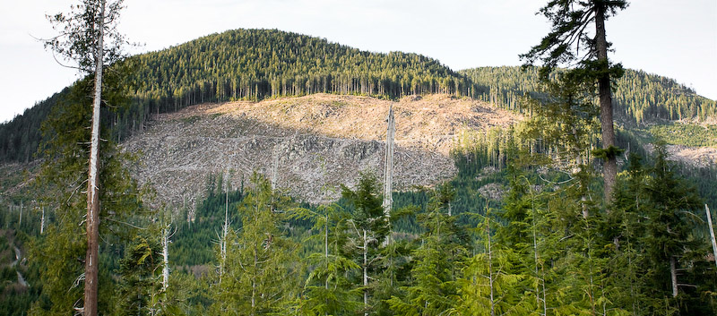
Coupes rases dans la "Gordon River Valley", Colombie-Britannique (T.J. Watt, Wikipedia 2017)
Obligation d'autorisation (L124-5, L312-9, L312-10, R312-19 à 21)
Reconstitution après coupe (L124-6)
Régimes de sanction (L163-2, L362-1 et D312-22)
DRAAF
DDT
Produire une cartographie annuelle des coupes rases en France
| Détection annuelle | |
| Précision thématique | Taux d'omission/commission < 10% en surface |
| Précision géographique | UMC : 1 ha ; Précision planimétrique : 5~10 m |
| Système de projection | RGF93 - Lambert 93 |
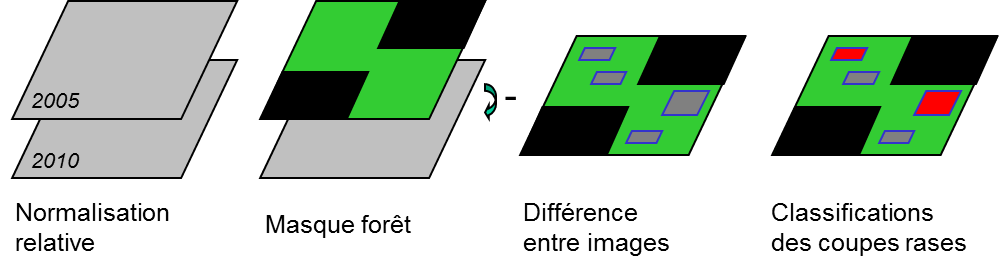
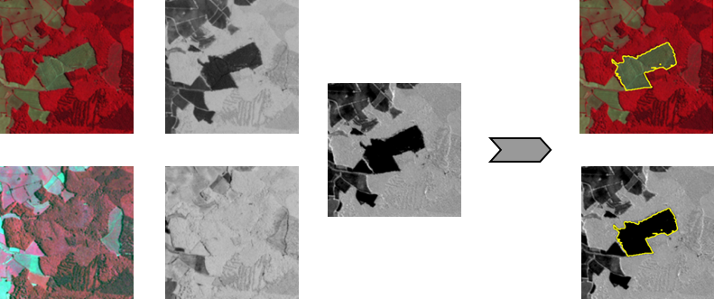
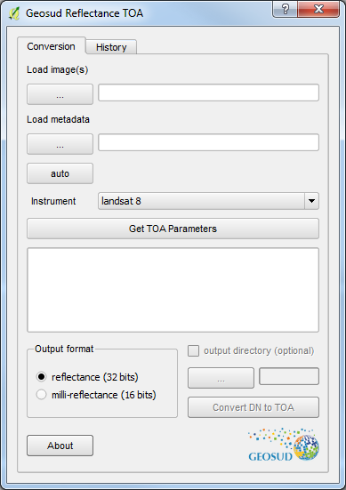
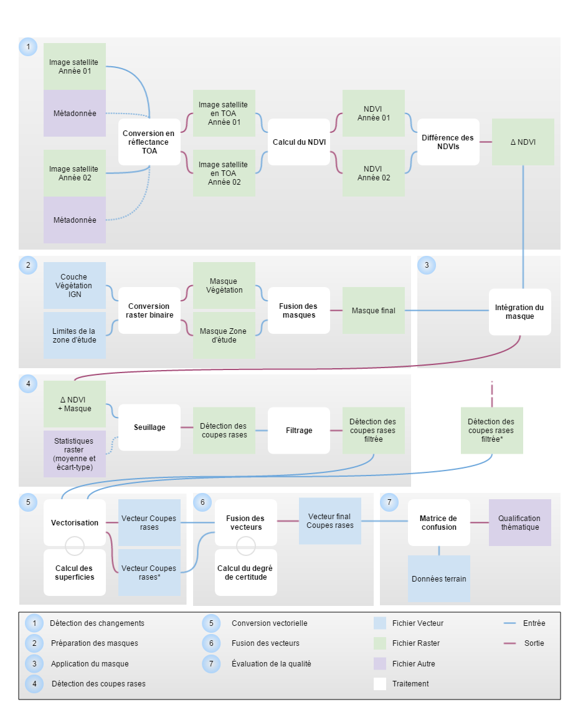
https://github.com/remicres/ClearCutsDetection
otbcli_ClearCutsDetection
-inbmask Input vector data for T0 Image mask (Before) (optional, off by default)
-inamask Input vector data for T1 Image mask (After) (optional, off by default)
-inb Input T0 Image (Before) (mandatory)
-ina Input T1 Image (After) (mandatory)
-masksdir Vegetation masks directory (optional, off by default)
-nirb near infrared band index for input T0 image (mandatory, default value is 4)
-redb red band index for input T0 image (mandatory, default value is 1)
-nira near infrared band index for input T1 image (mandatory, default value is 4)
-reda red band index for input T1 image (mandatory, default value is 1)
-filt Minimum number of pixels detected (mandatory, default value is 10)
-outvec Output vector layer (mandatory)
Ajouter un fichier .xml dans QGis
dossier /usr/share/qgis/python/plugins/processing/algs/otb/description/5.XXX/
(remplacer XXX par le numéro de version)
<root>
<key>ClearCutsDetection</key>
<exec>otbcli_ClearCutsDetection</exec>
<longname>Clear Cuts Detection</longname>
<group>Feature Extraction</group>
<description>performs cuts detection, from two input images and an optional forest mask</description>
<parameter>
<parameter_type source_parameter_type="ParameterType_InputImage">ParameterRaster</parameter_type>
<key>inb</key>
<name>Input T0 Image</name>
<description>Input T0 Image.</description>
<optional>False</optional>
</parameter>
...
Outil accessible via la boîte à outils de traitements
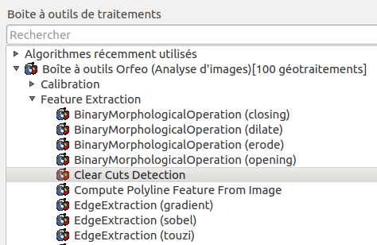 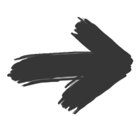 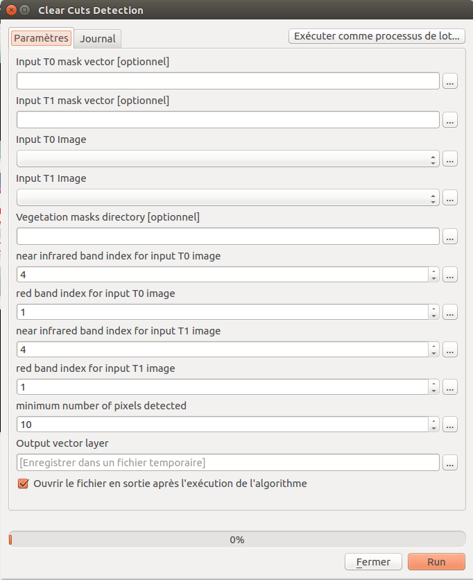
Automatisation de l'intégration des résultats dans PostGIS script ogr2ogr traitant ~90 SHP en 1 minute, table finale ~1.5M de polygones avec index spatial
Symbologie avec QGIS et diffusion WMS avec QGIS Server
Mise en cache de tuiles avec Mapcache
Réalisation d'une interface cartographique OpenLayers avec affichage des informations getFeatureInfo dans une popup
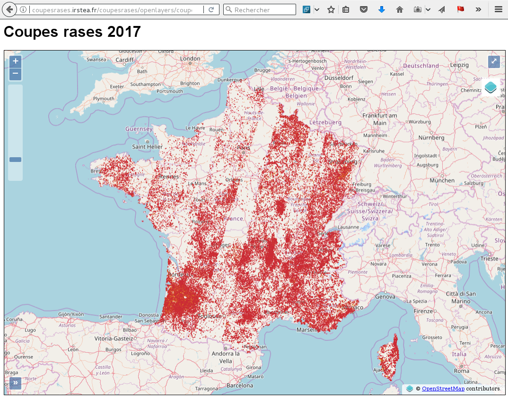
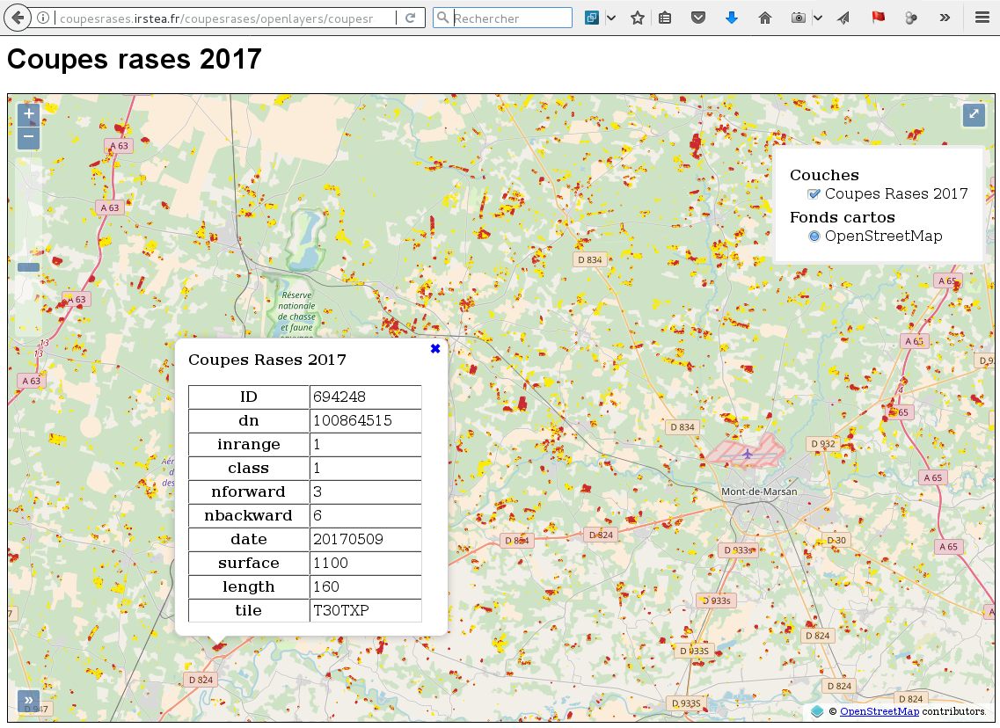
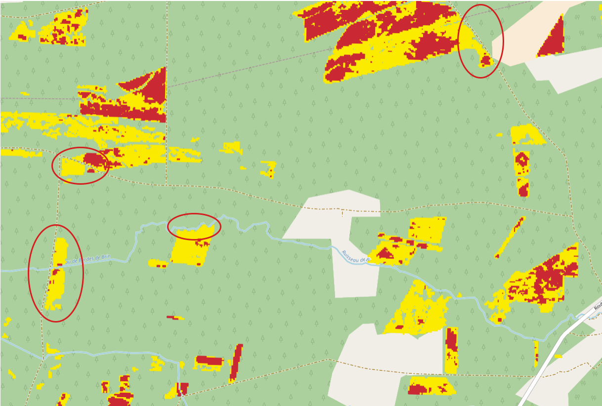
Hébergement sur une plate-forme accessible aux utilisateurs, avec gestion des droits d'accès
Automatisation de l'ajout de couvertures annuelles (avec gestion de l'historique)
Gestion de la diffusion des couches dans QGIS-Server avec LizMap Plugin
Réalisation de l'interface cartographique avec LizMap Web Client
Ajout d'une couche heatmap représentant la densité de polygones pour les faibles niveau de zoom